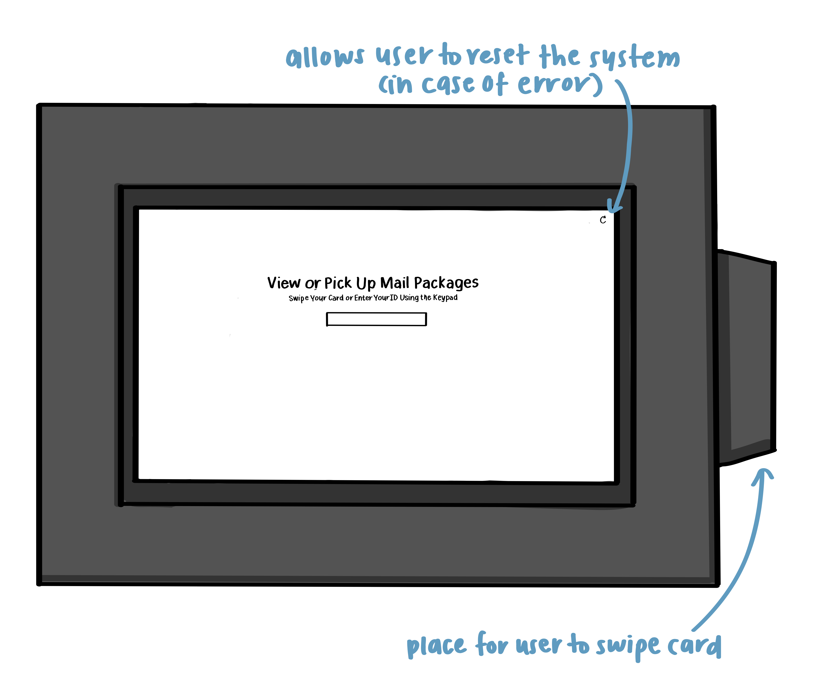
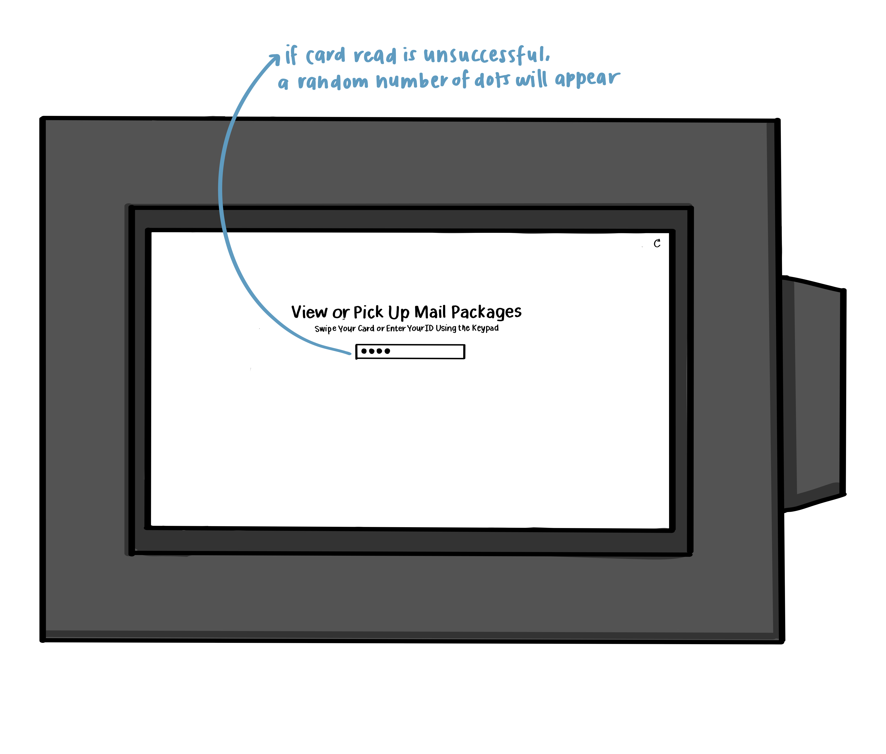
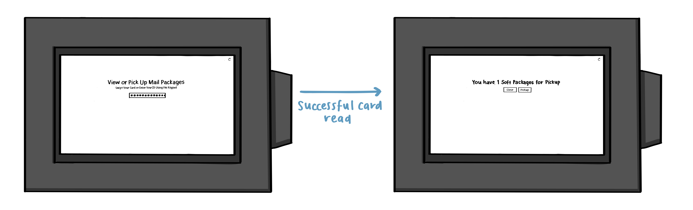
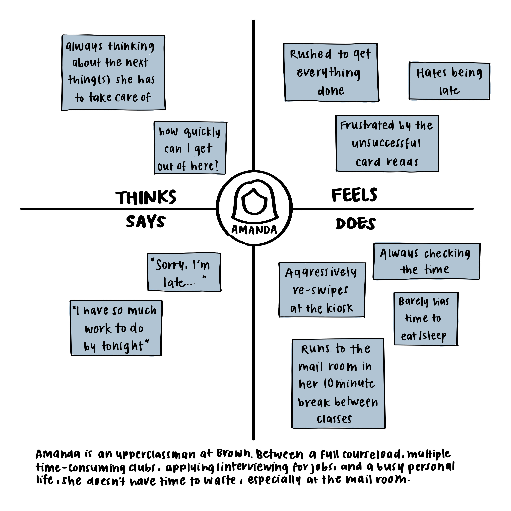
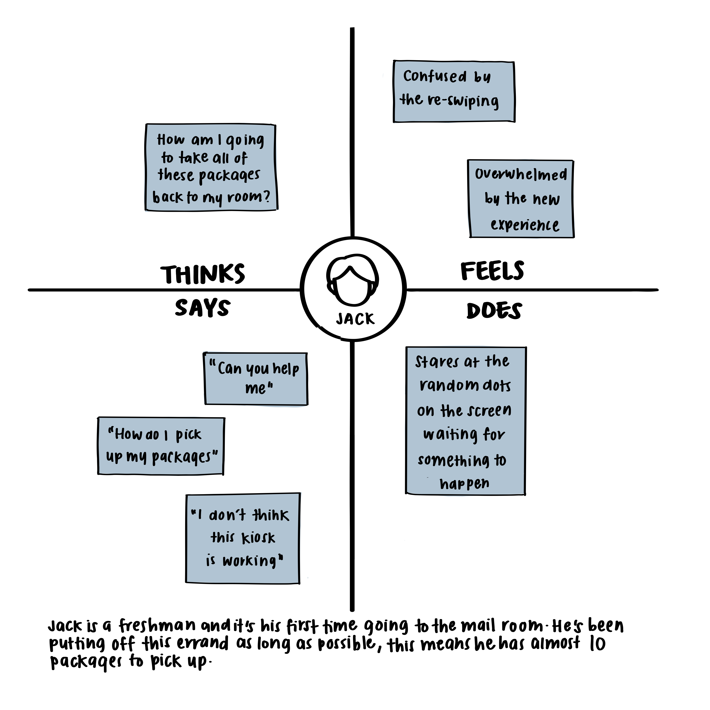

Background
Interfaces have existed long before computers and phones. We may not realize, but everything we use has an interface. From door handles to light switches to water fountains everything we interact with has an interface. However, just because everything has an interface and these interfaces have existed for a long time, doesn't mean these interfaces are efficient or easy to used. We've all pushed a pull door and wondered why it was designed like that in the first place, because the interfaces of obvious things can often go overlooked. One of the interfaces that causes me frequent frustration is the interface on the Brown University Mail Room Kiosks.
This interface is quite simple: it consists of a digital interface and a card reader. Users, ideally, swipe their card, are presented with the number of packages they have and can choose to pick them up or close their session. The kiosk acts as the messenger between students picking up packages and the employees bringing out the packages. Once a user presses "Pickup Packages", the mail room system enters them into the system and informs employees what packages they are here to pick up.
Popular Opinion
In general, users found that the kiosks were less than efficient. When asked about how often they needed to swipe their cards multiple times, users noted that they usually had to swipe their IDs at least two or three times before getting a succesful read and it was somtimes hard to know when it worked.
When the read wasn't succesful, a random number of dots will appear in the box. However, this doesn't make it obvious that the read didn't work. Instead users would appreciate if the text explicitly said something along the lines of "Card read unsuccessful, please try again." The display after an unsuccessful read is almost exactly same to the display after a succesfful read making the interface confusing, especially for new users.
Additionally, all of the users I talked to mentioned that they never realized that there was a reset button in the top right and would continuously swipe their cards until it worked.
Personas
| Amanda | Jack |
|---|---|
|

Amada is the most common user of the Mail Room Kiosk. Most students don't have time to lounge around the mail room, wasting time swiping a few times. They plan to get in and out as fast as possible. |

Another user of the mail room kiosks is Jack. Jack is new or rarely uses the mail room, but when he does he has a huge backlog of packages. Sometimes he wishes there was a way to select only a few packages to pik up at a given time. |
Storyboarding